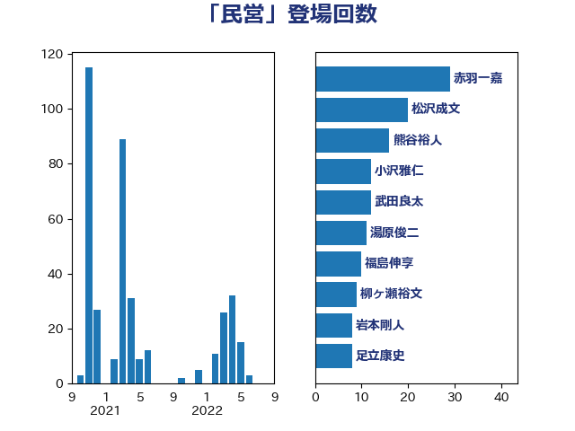

単語「民営」

| 赤羽一嘉 | 公明党 | 29 回 |
| 松沢成文 | 日本維新の会 | 20 回 |
| 熊谷裕人 | 立憲民主党 | 16 回 |
| 小沢雅仁 | 立憲民主党 | 12 回 |
| 武田良太 | 自由民主党 | 12 回 |
| 湯原俊二 | 立憲民主党 | 11 回 |
| 福島伸享 | 無所属 | 10 回 |
| 柳ヶ瀬裕文 | 日本維新の会 | 9 回 |
| 岩本剛人 | 自由民主党 | 8 回 |
| 足立康史 | 日本維新の会 | 8 回 |
| 武井俊輔 | 自由民主党 | 7 回 |
| 榛葉賀津也 | 国民民主党 | 6 回 |
| 舞立昇治 | 自由民主党 | 5 回 |
| 菅義偉 | 自由民主党 | 5 回 |
| 伊藤岳 | 日本共産党 | 4 回 |
| 吉田忠智 | 立憲民主党 | 4 回 |
| 守島正 | 日本維新の会 | 4 回 |
| 本村伸子 | 日本共産党 | 4 回 |
| 森屋隆 | 立憲民主党 | 4 回 |
| 道下大樹 | 立憲民主党 | 4 回 |
| 上田清司 | 国民民主党 | 3 回 |
| 井上英孝 | 日本維新の会 | 3 回 |
| 伊波洋一 | 無所属 | 3 回 |
| 室井邦彦 | 日本維新の会 | 3 回 |
| 小泉進次郎 | 自由民主党 | 3 回 |
| 岡本三成 | 公明党 | 3 回 |
| 岸真紀子 | 立憲民主党 | 3 回 |
| 浅田均 | 日本維新の会 | 3 回 |
| 牧原秀樹 | 自由民主党 | 3 回 |
| 中司宏 | 日本維新の会 | 2 回 |
| 原口一博 | 立憲民主党 | 2 回 |
| 吉田はるみ | 立憲民主党 | 2 回 |
| 堀井学 | 自由民主党 | 2 回 |
| 奥野総一郎 | 立憲民主党 | 2 回 |
| 宮本岳志 | 日本共産党 | 2 回 |
| 小山展弘 | 立憲民主党 | 2 回 |
| 川合孝典 | 国民民主党 | 2 回 |
| 市村浩一郎 | 日本維新の会 | 2 回 |
| 杉久武 | 公明党 | 2 回 |
| 枝野幸男 | 立憲民主党 | 2 回 |
| 玉木雄一郎 | 国民民主党 | 2 回 |
| 福島みずほ | 社会民主党 | 2 回 |
| 須藤元気 | 無所属 | 2 回 |
| 高橋千鶴子 | 日本共産党 | 2 回 |
| 上田英俊 | 自由民主党 | 1 回 |
| 中西祐介 | 自由民主党 | 1 回 |
| 務台俊介 | 自由民主党 | 1 回 |
| 古川康 | 自由民主党 | 1 回 |
| 堂故茂 | 自由民主党 | 1 回 |
| 塩村あやか | 立憲民主党 | 1 回 |
| 大石あきこ | れいわ新選組 | 1 回 |
| 小島敏文 | 自由民主党 | 1 回 |
| 小川淳也 | 立憲民主党 | 1 回 |
| 小沼巧 | 立憲民主党 | 1 回 |
| 山下雄平 | 自由民主党 | 1 回 |
| 山添拓 | 日本共産党 | 1 回 |
| 岡本あき子 | 立憲民主党 | 1 回 |
| 川田龍平 | 立憲民主党 | 1 回 |
| 平井卓也 | 自由民主党 | 1 回 |
| 斉藤鉄夫 | 公明党 | 1 回 |
| 木村次郎 | 自由民主党 | 1 回 |
| 杉尾秀哉 | 立憲民主党 | 1 回 |
| 柿沢未途 | 無所属 | 1 回 |
| 渡辺孝一 | 自由民主党 | 1 回 |
| 滝波宏文 | 自由民主党 | 1 回 |
| 盛山正仁 | 自由民主党 | 1 回 |
| 神津たけし | 立憲民主党 | 1 回 |
| 穀田恵二 | 日本共産党 | 1 回 |
| 篠原孝 | 立憲民主党 | 1 回 |
| 藤田文武 | 日本維新の会 | 1 回 |
| 阿部弘樹 | 日本維新の会 | 1 回 |
| 青木愛 | 立憲民主党 | 1 回 |
| 馬場伸幸 | 日本維新の会 | 1 回 |